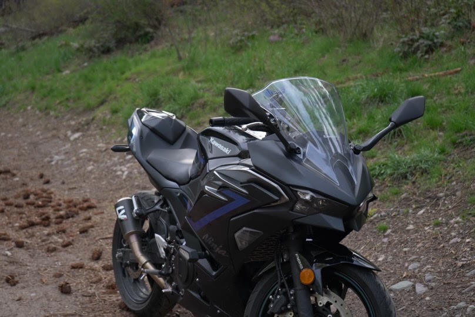
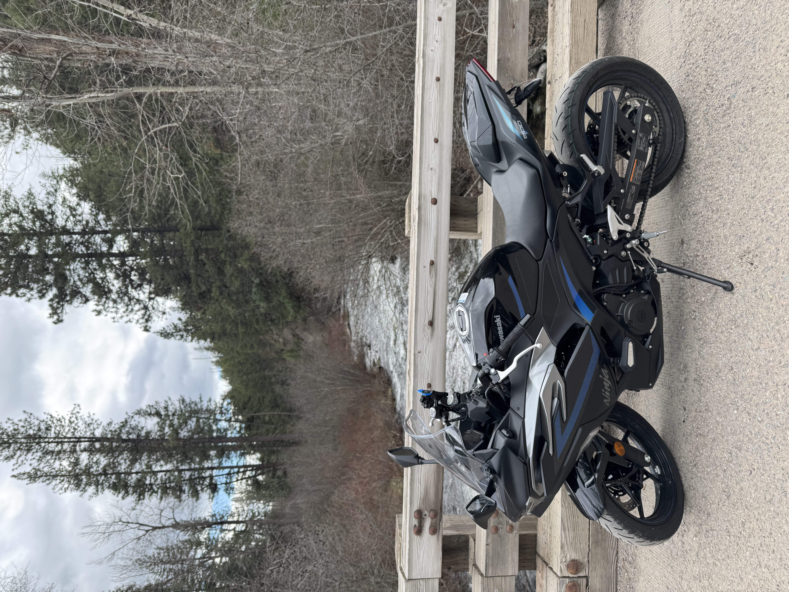
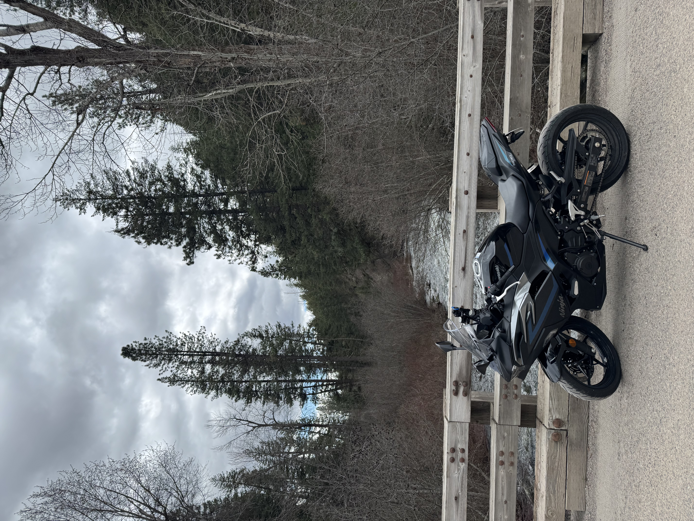
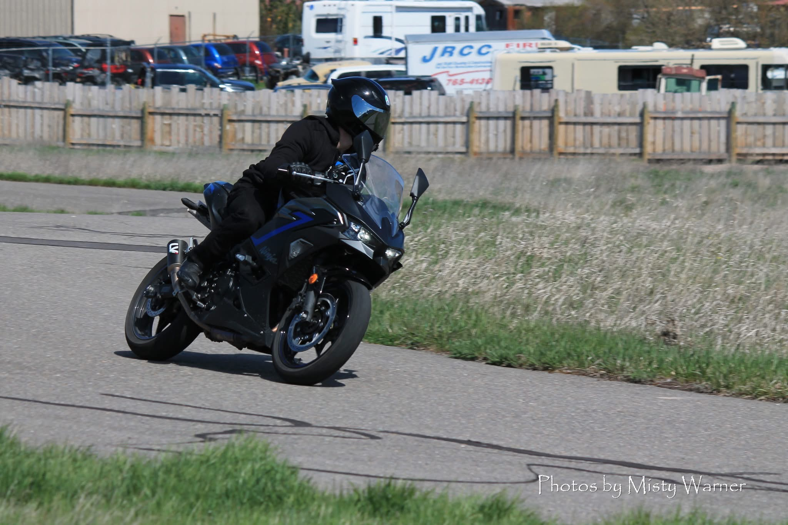
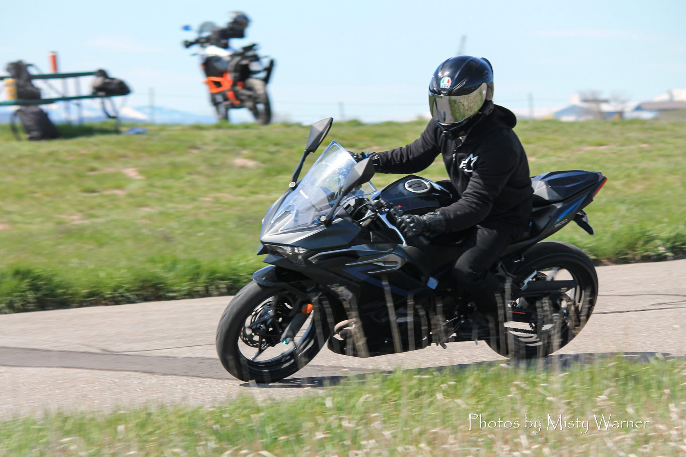
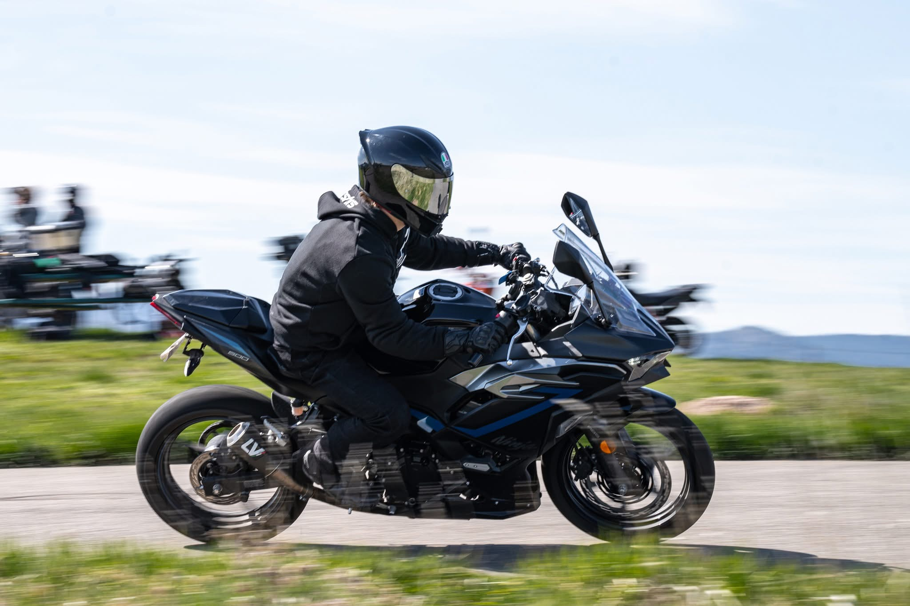

I started riding motorcycles in March of 2025. I saved up for months cutting everthing but essentials just so I could get the bike I had dreamed of for so long. I ended up driving 300+ miles to pick up my bike, a 2025 Ninja 500 SE ABS. I went that far because I absolutely needed the black and blue colorway. I had only taken the MSF course, and rode the bike all the way home. I got a compliment on my bike on the way back, which was the first time any of my vehicles had every been complimented like that. I instantly wanted to learn as much as I could about the hobby. In a two month span, I put 3,000 miles on my bike, so it is safe to say I have a love for this sport. The love I have for it is why I enjoy making the type of content I make so much. The idea that I might have helped someone find a new passion of their own keeps me going!






| Type | Brand | Model | Colorway |
|---|---|---|---|
| Gloves | Alpinestars | SPX-V3 | Black |
| Boots | Alipinestars | SMX-6 V3 | Black |
| Jacket | Alipinestars | Chrome Sport V2 Hoodie | Black |
| Pants | Rev'it! | Lombard 3 Jeans | Black |
| Helmet | AGV | K1S | Black |